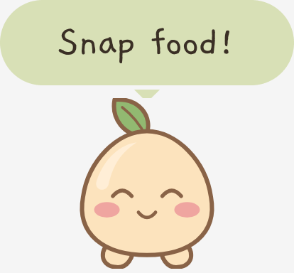

a day in my belly
A cozy, calm design language for logging what your belly had today. Source of truth: the "Belly" design system in Figma.
Warm, not clinical
Warm white, cocoa and olive instead of medical teal. This is a food app first.
One CTA color
Olive is spent on a single primary action per screen. A sage tint with an olive outline means selected.
Small screens, big text
Layouts must hold at 360 wide and 667 tall, and at large text sizes. Text scales with the phone but stops at 1.4× (1.2× for headlines). A row that can run out of width wraps instead of squashing, and a screen that centres its content scrolls when it no longer fits.
No outlines
Containers are filled, never outlined. The one soft touch is a 1px edge line on cards and rows (about 1.4:1 on the page; cards are white on a near-white page, so since the 2026-11-12 palette change this edge is what separates them, and the warmth lives in the edge, Bellie, the olive button and the tints). Text boxes wear it too: every TextField (Describe it, notes, names of foods) has the edge while idle (1.5pt, the same width as the focus ring so nothing shifts) and swaps it for the clay focus ring while typing, and pick-one rows and cards (option rows, choice cards) wear it until they are chosen, when the fill turns sage-tint and the edge becomes the olive outline. The food suggestions under Describe it are a card with the same edge. Since the 2026-11-12 palette change the pills and chips that sit on the page (symptom chips, the Saved and AI Ideas pills, the Feedback pill, ingredient chips), the round back and gear buttons and the stepper pills wear the same 1px edge, because a white shape on a near-white page otherwise disappears. Chips inside a card (surface 2), verdict badges and the little circles inside rows do not get one. Anything selected (symptom chips, lifestyle tags, choice cards, option rows, cuisine tiles, the active segment of the segmented control) is a light green fill, sage-tint, with the olive outline; this replaces the white-with-outline selected state. Unselected chips are surface; chips inside cards are surface 2, a calm greyish tan (#F2EADB since 2026-11-12; it was #ECDAB9). Because surface 2 is now so light, the inactive carousel dots use ink-muted at 30% and the off switch a soft warm grey (#D6D0CA) so they stay visible. One exception: form dropdowns (portion, verdict, eaten time) keep a 1px hairline edge so they show against the sheet they sit in, and a hairline between the options when open.
Icon and label, always
Verdicts never rely on color alone — every badge carries a shape and a word.
Sentence case, always
No all-caps labels, no eyebrows. Plain words, said once.
Say it once
A title is not repeated by a subtitle, an aside or a footnote under it, and a chip is not listed again in a card. If the label or the layout already says it, the text goes (Figma row 40).
Color
Surface tokens set the quiet base. Brand and semantic tokens carry meaning — each verdict color has a deeper "ink" variant for text and a light "tint" for fills, so contrast holds wherever it's used.
Type
Gaegu speaks, Nunito works. Gaegu is the voice: headlines, greetings and short warm lines, always 18pt or larger. Nunito does the work: labels, rows, chips, buttons, times and data. Never an all-caps label.
Components
Every interactive shape is a pill or a soft rounded rectangle, nothing sharp or skeuomorphic — shown here at real phone width (390px), not stretched across a desktop row.
Sits directly above the primary button it changes. 20px box, 6px corners: empty with an ink-soft border = off, filled CTA with a white tick = on (shape and colour, never colour alone). Caption-size label; the whole row is the 44pt touch target. Hidden when the screen already has a dedicated button for the same thing.
Tapping a hero element (the pet, an avatar, a primary card) surfaces its actions right on top of it — a dark scrim plus a few icon-circle buttons — instead of pushing a bottom sheet or a new screen. Reserved for 2–3 short-label choices; a longer or more detailed choice still belongs on its own screen.
44pt surface circles with the 1px edge. Title is Nunito bold 18, centered on the bar.
Surface card, 20 radius, soft lift shadow. Destructive rows use red ink. Hover and press fill with surface 2.
Spicy chicken tacos
Oatmeal with banana
Spicy chicken tacos
Oatmeal with banana
Camera icon = typed, no photo. List view keeps the same badges smaller, for scanning a long diary.

The photo tile is always there. With no photo it shows the filler image (app/assets/images/filler.jpg: a pale tile with a grey no-image mark, cropped to fill), never a blank gap. The pencil sits top right, 10px in, and appears only after Edit is tapped (viewing never shows edit controls); it opens the take or choose photo choice. It is drawn at 36px, with a 48px touch target.
In edit mode a verdict dropdown lets you change the overall verdict: one row showing the current verdict, which becomes the list of four choices in place (Good, Okay, Caution, Avoid), so the current one is never shown twice. The current verdict and the choices look the same, a plain colored icon and label (no pill), with a check on the current choice; picking one closes it. The card then shows your choice with a note, "Set by you. The AI said Caution.", and keeps the AI's reasoning below it. Choosing the AI's own verdict again removes the note. Checking again replaces your choice with the new AI verdict.
Text-only dropdowns use the same row in ink, with no icon: Portion (Small, Regular, Large) and the time field (Eaten / Taken). The time field shows the day and time the way people say it; tapped, the date-and-time wheel opens in place under the row on iPhone (never a second sheet), and the system date then time dialogs open on Android. It never goes later than now, and reaches back a week, or to the entry's own day when that is older.
In History, an entry opens as its own page (see "History" below). Edit entry (15a, 15b) opens on a full screen. A meal is laid out like its entry page, in one centred column: just a back circle in the bar (no title, and no heart: the favorite heart lives on the entry page and acts at once). Then the name as a centred field with a line under it, full width (the line turns to the focus colour while typing), the time pill, Bellie in the verdict’s mood, the verdict as a pill with a chevron inside it (tapped, the four choices open in place, the current one outlined; Bellie follows the choice), and a “Note” title over a taller note field (about three lines). “What’s going on?”, “Anything bothering you now?” and the favorite row are not asked here (the meal keeps what it had). A new name keeps the meal’s verdict, a verdict chosen by hand sits over the AI’s, and nothing is checked again on Save. A meal saved without a verdict has no Bellie or dropdown. Portion is not edited here. A dose is the dose details: its name, time and type, the Dose chips (or “Other” with the text) and the Note. Save changes saves; the back arrow leaves without saving.
A short question after a meal or dose is logged: a title, one line saying what was logged, a primary button for yes and a secondary "Not now". Tapping outside means Not now. Either answer happens after the sheet has closed. Yes opens the symptom screen (after a meal it is linked to that meal and says "After lunch"); no carries on as before.
Offers one optional feature once (Figma 08c), after the third logged meal on Today, for anyone who skipped it in onboarding. Like the question sheet it has a primary yes and a secondary “Not now”, and either answer happens after the sheet has closed (the phone can’t show its permission prompt over a closing sheet). It sits on the page bg, not surface, with the belly at 72, a Gaegu 24 title (Belly/Display small) and centred text; buttons are 12 apart.
Option row (Figma component, 52 high): a surface row, radius 20, Nunito SemiBold 15 label and a radio on the right; the chosen row is sage-tint with the olive outline and a filled olive radio. Rows are 8 apart on a bg sheet, with a Gaegu 24 title, one Body line under it and a caption footnote. Choosing a row saves and closes. Use it for short pick-one lists where the choice is a setting; the plain hairline list (late-meal window, bedtime) stays for the other Settings pickers. If the phone is blocking the feature, a red note and a secondary “Open Settings” button appear under the rows and nothing is saved.
The tab bar is a compact pill (344×64pt, fully rounded, surface, a soft shadow below) centred above the bottom edge, so the page colour shows around it and the content above scrolls beneath it. It floats 16pt above the edge, or the home indicator inset minus 12pt when that is larger, so the indicator never touches it. Today, History, Kitchen and Profile are icon-only tabs, two either side of Log (Kitchen is a chef’s hat; Figma row 29, “Tab bar floating (Kitchen)”): solid shapes (24pt icons in 64×48pt targets) with no outline. The current one is solid ink on a small surface-2 circle (44pt) and the other is a muted ink-muted silhouette; the door and the clock hands are cut out in the colour behind the icon (surface-2 on the circle, surface on the pill). Log is the one olive circle (56pt, 28pt icon) with a 5pt ring in the page colour, so it looks cut into the pill; it rises 20pt over the pill’s top edge in the middle, so it reads as the action. Pressing a tab makes the whole bar grow about 3% (to 1.03) and ease back when the finger lifts, with no bounce; the Log button grows the same way on its own. Every filled button (Get ideas, Save, and the rest) and the Feedback pill do the opposite: they shrink about 3% (to 0.97) under the finger and ease back. None of it moves with Reduce Motion. The icons themselves do not move, and the circle just changes tab: it never slides. Motion tells you where you are. A page you drill into (an entry, its editor, My additions, Favorite foods) pushes in from the side with a back arrow and swipes back from the left edge. The logging screens (Log, Food, How I feel, Medication) slide up as a modal and close with a swipe down, which is switched off once something is typed or picked. Switching tabs and leaving Welcome only cross-fade. None of it moves with Reduce Motion. Bottom sheets follow a finger dragged down on them and close on a flick or a long enough drag, over a scrim that fades rather than sliding up with them. The arch opens and closes along the same spring, with no bounce, so tapping Log again part-way reverses it; with Reduce Motion it only fades. Rows that swipe (Today, History, Favorite foods, My additions) follow the finger one to one, tick as Delete appears, and delete with an Undo toast. The camera keeps its own motion. Tapping it fans four round buttons in an arch above it (radius 138pt, at 143.5°, 106°, 74° and 36.5°; Figma 45a) over a dimmed screen: Food (honey tint, opens the Food screen; Figma 14a), How I feel (clay tint), Tell me (a white surface bubble with an olive sage-ink mic, opens the voice log) and Medication (sage tint), each 56pt with a cream label under it. The Log button becomes a close icon while the arch is open, and the Android back button closes it. This is the only way into logging (Figma row 22): the + button, Bellie and a day in Today’s week strip all open this same arch, and there is no full-screen Log page. The belly ring and the week strip still open the full Log page. Kitchen and Profile are the last two tabs. Settings is not a tab: a round gear button (44pt, surface, the same circle as a back button) sits at the top right of Profile and pushes Settings, which has a Back circle beside its title and no bottom bar. Today and History have no round button beside their title.
Floating text action (Figma row 27). The Kitchen page (moved from History, Figma row 32) has a small Feedback pill at the lower right, just above the tab bar: a surface pill, 36pt tall and fully rounded, with the lucide MessageSquareText icon (18pt, ink) and the word Feedback (label, ink) 6pt apart, the soft lift shadow, 24pt from the right edge and 8pt above the bar’s top. The tap area grows to 44pt, and the list under it adds the pill’s height to its bottom padding so the last entry scrolls clear. It shrinks about 3% under a finger like the filled buttons (none with Reduce Motion). It opens the same sheet as Settings > Send feedback, titled “Tell us what you think” with “Something missing, confusing or great? It goes straight to the team.” Use it for one quiet, always-there action per screen, not for anything the person must do.
Home-screen widget

Home-screen widget (iOS, Figma “07 Home-screen widget”): a surface card (radius 24, content inset 16) with Bellie under a sage-tint speech bubble that says “Snap food!”, tail down. Small is just that; tapping it opens the camera. Medium puts it on the left (132pt) and up to three saved foods on the right, each a 40pt surface-2 pill (radius 16, 16 inside, one line) that logs the food at once, like a Quick log chip; with none saved it says “Add favorite foods to log them from here.” The bubble and Bellie are one picture (assets/images/widget-bellie-says.png, exported from the Figma component Widget/Bellie says), because a widget can’t load Gaegu; the pill names use the system rounded font, the nearest to Nunito. The widget card keeps its light colours in dark mode. It needs a development build, not Expo Go.
App tour
First-run app tour (Figma row 43, “App tour”). It runs once, on the first visit to Today after setting up, and again from Settings > Replay app tour. The whole screen, tab bar included, dims under ink at 62%, with a rounded cut-out around the thing being shown: Bellie and her bubble (radius 32), the Log button’s ring (3pt, a circle) and each tab (6pt, radius 22), Today included. A surface coach mark (radius 24, side margins 16, at most 400 wide) sits on the side of the cut-out with more room, below first, with a 22×12 tail pointing at it. In it: a cta “N OF M” label (12pt bold, 1pt tracking), a 44pt surface-2 close circle, the title (Section), one line of help in ink-soft (Small), and Back (secondary) and Next (primary) buttons, right-aligned; there is no Back on the first step and the last one says Done. Eleven steps: Bellie (“Tap Bellie to log food, how you feel, or a medication.”), Log, History, Kitchen, then two spotlights inside Kitchen (the Plan my week button, or the Meal plan row once there is a plan, and the My fridge row or pill, radius 28 and 20), then Profile (what you can do there, and that the gear has reminders and settings), which goes on to its two pages: the About you row (radius 24), then the About you page itself opened behind the dimmed layer with the card pinned to the bottom, then the Customize Bellie row, then the Customize Bellie page opened with its row of gifts spotlit (8pt, radius 20) and the card pinned to the top so it never covers the gifts. A card pinned to the top or bottom has no tail. The screen behind the dimmed layer follows the step: it opens History, Kitchen and Profile as they come up, so a step describes a screen you can see, and the tour ends back on Today. Spotlights inside a tab are measured once the tab is open. Taps outside the card do nothing; the X and the Android back button end it, and any ending counts as seen. The card fades in on each step (a little slide too, but not with Reduce Motion). The screen under it is hidden from a screen reader, and focus moves to each title.
Today
The belly is the mascot, not a pet. The everyday Bellie is the “Little” stage of one character who grows with check-in days (Baby, Little, Kid, Teenager, Adult); the four moods below are that body with a different face. Its mood follows the latest meal’s verdict; with no meal yet it is Happy. On Today she is big (160) under a speech bubble: the verdict bubble (Gaegu 24, centred, a surface card of radius 24 up to 280 wide, tail down) that carries her line about the day, at most about 40 characters (“Easy on the spice tonight?”, or “Tap me to log” on an empty day). Until there are five meals for a first report, the bubble says how many more it takes instead (“3 more meals and I can start spotting patterns.”, “1 more meal…”; Figma 42e), so the promise is the first thing you see. There is no ring. She is the button: she squashes and tilts under a finger, jiggles on a tap (a hop and a wobble, with a light haptic; none with Reduce Motion), then the quick log arch opens (Figma row 22: Food, How I feel or Medication, for today; a tap on a day in the week strip opens the same arch). There are no cards under her: her line is the day’s take, and the week’s summary lives in History. The words are made on the phone at once and replaced by the AI’s when they arrive; they are only asked for again when what was logged changes, and offline the phone’s own words stay. Today’s entries below sit at 40% strength and come to full strength as the page scrolls Bellie away; a page too short to scroll is never faded.
Bellie grows (Figma “Belly growth”, G13 and G14): one character in five stages that follow check-in days, never calendar days, and never shrink: Baby from the first day (a small round blob with one leaf and no feet), Little after 30 check-in days (the everyday Bellie: two feet, closed happy eyes), Kid after 90 (hands and a three-leaf sprout, open eyes with a shine), Teenager after 180 (a leaner body, longer limbs, eyebrows, a taller sprout) and Adult after 365 (the tallest, calm eyes, a leafy crown with a bud). Each stage has the four moods (Happy, Okay, Caution, Avoid) as faces on the same body. A stage is drawn at a share of the box it is given (Baby 62%, Little 80%, Kid 88%, Teenager 95%, Adult 100%), standing on the bottom edge, so a young Bellie is smaller without being too small to see. The first check-in after a milestone plays a full-screen Bellie grew page after the streak (Bellie hops at its new size with confetti, a Gaegu line such as “Bellie is a kid now”, “90 days of check-ins”, then Continue); Bellie only changes size once that page has been seen.
Speech bubble: a short Gaegu line in a surface pill with a small tail pointing at what is talking. No outline.
Verdict bubble (Figma “03c.1 Food: verdict”): the card version of the same bubble, for the verdict headline. Gaegu 24, centred and wrapping, in a surface card (radius 24, 20 across, 16 down), tail down, over a 120 Bellie. Under Bellie, centred: the verdict badge, the AI’s one-line summary (Nunito 15), and the matched triggers as read-only chips. Then a “Better next time” card in sage-tint (the AI’s tip, left out when there is none), then “Why we think so” in a surface card. The favorites star is not on this screen.
Food details (Figma “21e”, was 03d.3): opens from “Add details” on the toast, after the meal is already saved, so there is no “Added to today” pill. The food is the display title with a 24pt clay-ink heart at its right (filled when on): it adds the food to favorite foods, and is shown only when the food is not already a favorite. “How’s your belly?” in Gaegu 20 sits under it. No verdict badge. In each group the “+” add-your-own chip comes last, after the real options. The footer is “Done” with a quiet “Skip for now” link (clay ink) under it; the X does the same as Skip. Editing a saved meal keeps the “Add to favorite foods” row instead.
Logged meal page (Figma row 24, 24a): the meal name (display, centred) and one line “Sat, Oct 10 · 7:45 PM” (Nunito 14, ink soft) come first, with white chips for any tags the user picked (not the matched triggers). Then Bellie with the verdict badge and the AI’s one-line reason, with no speech bubble (the badge and the line already say it). Below, one surface sheet (radius 24, padding 20, 24 between sections) holds Symptoms and Note, and is left out when there are neither. Last is the Why? card, open by default like everywhere else (a tap on the row closes it to one line): it holds “Better next time”, the reasons and the disclaimer. A heart 44pt circle sits left of the … button in the top bar; it is filled clay when the meal is a favorite food, and a tap adds or removes it. There is no portion (it can’t be set anywhere) and no Details card. A meal logged without a verdict keeps the plain page with its cards, minus Details.
Onboarding (Hello is the Bellie screen): Bellie is the mascot (the peach-drop belly: a soft rounded body that narrows a little toward the top, two small feet and a green leaf sprout on top; Figma “Belly”, 2026-11-12) and speaks in a large bubble (Gaegu 26, padding 12/24) above it, tail down. Bellie talks about feelings and food only, never weight, size or shape. The opening screen says “Hi, I’m Bellie! Let’s see how your belly feels.” over a single “Get started”. The name is not asked in onboarding; it is set under You, “Your name”, and shown in Today’s greeting.
Progress bar (onboarding): a 6pt surface-2 track with a cta olive fill, both fully rounded. It runs from just after the back circle (16 gap) to the right edge of the top bar, and fills step by step (seven steps in onboarding). Hello has none.
Onboarding flow (Figma row 17 and G18, nine screens): Hello, What you get (“Find what upsets your body.” with “Log for a week and Bellie makes your own list.” under it, then a small “Example” label over one surface card holding a Worth watching row and a Sat well row, the same rows as the weekly report; Figma 42a), then Check in, and get gifts to customize Bellie. (Figma G18: Bellie in the little hat beside a wrapped gift, and “Find them in Customize Bellie, on your profile.”; the picture is centred in the room between the heading and Continue, so the gaps above and below match), then the questions: condition, usual symptoms, privacy (three one-line points, anonymous by design), bedtime, reminder timing and the phone’s permission screen. There is no medications question and no recap or closing screen: setup ends on Today, and medications are added in Profile. The progress bar counts seven steps; the permission screen shares its step with the timing question and is skipped when they choose “No reminders”, which ends setup. Each question is a display title, a Gaegu 18 line under it in ink soft (8 below the title), then the answer 24 below, with the buttons pinned under a scrolling body (16 above, 24 below). Nothing is preselected. Condition rows lead with how it feels and put the medical name under it (“Burning in my chest”, “Acid reflux or GERD”); pick all that apply, “I’m not sure yet” clears the others, and Continue waits for a choice. A question that can be skipped swaps its button: with nothing chosen it is a secondary “Skip for now”, and once something is chosen the primary “Continue” (usual symptoms). Bedtime uses Option rows too (9:30 PM, 10:30 PM, 11:30 PM, 12:30 AM; 10:30 PM is chosen to start, and any half hour from 8:00 PM to 2:00 AM can be set in Settings). Reminder timing uses Option rows (1, 2 or 3 hours after I eat, or No reminders; 2 hours is chosen to start). The permission screen is only a centred headline while the phone’s own prompt is up. First meal (17i, Figma row 35) is the last step, shown once the questions are answered (setup is already saved): no progress bar, a back circle (to the timing question), Bellie happy at 160, the display title “Let’s log your first meal”, a Gaegu 18 line “Anything you ate today. Bellie will tell you how it sits.”, a primary Log a meal (opens Food over Today) and a quiet Skip for now (goes to Today). The symptom answers use the existing sage chips grouped by area.
Week strip: Sunday to Saturday. Today is an olive circle; a small sage dot marks a day with entries. Tapping an earlier day fills its date with a soft surface-2 circle for about 0.6s, and the quick log arch opens for that day (today’s circle opens it too); the day stays highlighted while the arch is open. Food, Symptoms and Medication then log for that day (saved at noon; the time pill can still change it). Later days are not tappable. Diary rows (meal, symptoms, dose) are filled surface with no border; doses carry a “Taken” pill. Meals use Utensils as the thumbnail icon.
Food flow
Three calm steps, each its own screen with only a back circle on top: capture (Figma 21a: Gaegu display “What did you eat?” over one field; the camera and photos icons sit inside the field at its right, 20pt ink soft with a 44pt tap area, so a photo is one tap and is checked as soon as it is taken or chosen, with no review step; your favorite foods are one scrolling line of chips under the field; the olive “Check this meal” button sits in the footer and stays disabled until something is typed, with a quiet “Just log it” link under it once there is text), verdict and details. Back walks the steps in reverse.
Favorite foods row: no label and no “See all” (About you > Favorite foods is the place to manage them), just one scrolling line of surface chips 8 under the field. It shows only while the field is empty: once you type, the suggestions take over. With no favorites the row is hidden. Tapping a chip skips the check and opens the details with that food’s saved verdict. “Just log it” still gets a verdict: the meal is logged at once, then checked in the background (Figma 21f); until it lands its Today and History row shows a quiet surface 2 “Checking…” pill with no icon and no verdict colour. With no signal it is checked the next time the app comes to the front (up to 48 hours later).
Skeleton (Figma row 44): opening a meal while it is still being checked shows its real header and surface 2 blocks where the result will be: a round one for Bellie (114), the “Checking…” pill, two centred lines for the reason (16 tall, fully rounded) and an open Why? card with five lines. A typed meal keeps its own name; a photo-only meal, which the check names, gets a 240×44 block for the title and no heart until it has one. Blocks pulse softly between 100% and 55% opacity (about 0.9s each way) and hold still with Reduce Motion; a screen reader skips them and hears “Checking this meal”. The verdict fills the same layout in place when the check lands, with no jump. After a minute with no answer (no signal) the skeletons go: the pill says “Couldn’t check yet” and one line under it, “Bellie will try again when you’re back online.”, with the real header above (Figma 44d); a photo-only meal shows the plain title “Meal”. The verdict still fills in if a later check lands.
Food suggestions (Figma row 20, Suggestion row component): typing one letter or more in “Describe it” shows up to five matching foods in a surface card (radius 16) 8 under the field, inline so it pushes the page down and never floats over it. Each row is 44 high, 16 in from the card edge, in Nunito 15 ink with the typed letters in bold, and a hairline between rows (inset 16). Names come from, in order, your favorite foods, meals you have logged before (most recent first) and about 150 common foods, each name once; a match at the start of a word ranks above one in the middle. That decides which five make the list; the five are then shown with favorites first and each group A to Z. A favorite has a 16pt clay heart at the right and logs at once with its saved verdict, like its Quick log chip; the others fill the field so you can check them. A food typed out in full is not suggested back (a favorite still is, as the one-tap way to log it). In Favorite foods the list has no hearts, since those foods are already saved. When the list appears the page scrolls so the field and list clear the keyboard, and a screen reader hears how many suggestions there are.
The same rows are used in the “Not quite right?” sheet (Figma row 23), 8 under “Tell us more” and above “Update verdict”. The last 3, then 2, then 1 words after the last comma are matched (two letters or more); tapping a row replaces those words with the food and a space, and the keyboard stays open. A favorite only fills the text there (no instant log, no “logs now” for a screen reader). Nothing shows after a space or comma, or once the words are a food in full.
Show all 7
Verdict (Figma 21c, 21d): the speech bubble with the Gaegu headline, the belly in the verdict’s mood, the AI’s one-line summary and the matched trigger tags, all centred. The bubble already says the verdict, so there is no badge on this screen (a logged meal’s page keeps its badge). Under that is one surface card, “Why?” with a chevron, open by default (a tap closes it to one line; every Why? in the app works this way): it holds “Better next time” (the tip), the reasons (Nunito 15, a 6pt honey dot each), the key ingredients with a clay “Show all N”, and the disclaimer as a caption. With nothing to explain, only the disclaimer shows. In the correction sheet, the keyboard’s Done submits like “Update verdict”. Footer: olive “I ate this” and a quiet clay “Not quite right?” link, which opens a sheet to correct the verdict. There is no “Not eating this”: the back arrow does that.
List pages (Figma rows 25 and 26): Usual symptoms, Favorite foods (05b), Medications and Lifestyle factors share one layout, reached from About you. A back circle, the Gaegu display title (32 above the first card, no instruction line under it, except Lifestyle factors, below), then one filled surface card per item you chose (no outline): a 38pt icon tile in the kind’s colour (food honey, symptom and lifestyle clay, medication sage; a favorite food shows its photo when it has one), the name and one caption line (a symptom’s body area, a food’s verdict, a medication’s type; a lifestyle factor has the name alone). No Log pills: logging happens in the Log flows. A tap opens the item (a food or medication: Edit and Remove; a symptom: Remove), and every card can be swiped left to delete, like a food. Adding one closes its sheet and shows a short toast (“Heartburn added”). An Add a food / Add a medication / Add a symptom / Add a lifestyle factor secondary button is pinned at the bottom (on Favorite foods, Add a food opens the food check headed “Add a favorite food” with Check this food, then one Save to favorite foods button, or Just save it for a name with no verdict; it never logs a meal; Figma 41d, 41e), and an empty list is one short line (“No favorite foods yet.”) above it. Add a symptom opens a sheet with only the symptoms that are not on the list yet, by body area, and an Add button that stays dimmed until one is picked (25e); when all are on the list it says so (26c: symptoms you typed yourself with a “+” chip are listed after the chosen ones, with the area they were added in, and can be removed here). Add a lifestyle factor opens a sheet with one field (“e.g. Skipped breakfast”) and an Add button, dimmed until something is typed (26b); a name that is already a built-in chip is not saved twice. Usual symptoms are shown first when you log. These add sheets, and the Your name sheet, sit on the page bg rather than surface, so a text field and the unselected chips (both surface) show as boxes before they are focused or picked.
Details (Figma 03d.1): opened from “Add details” on the “Meal logged” toast (Figma 13a), after the meal is already logged (“I ate this”, a favorite chip or “Just log it” all log straight away and go back to Today), so everything is optional. It is laid out like How I feel: the food is the big Gaegu title, with “Anything else? All optional.” under it, then the time pill on the left and the verdict badge on the right of one row. Tap-only groups come before typing: “What’s going on?” (lifestyle) and “Anything bothering you now?” (a few symptom chips), each starting with a “+” chip that turns into a field in place to add your own (saved to Lifestyle or Usual symptoms, picked at once). The note is one line at the end, with no label. There is no portion here; it is set from the entry’s edit screen. The top-left is a close X, not a back arrow (there is nothing to undo), and the pinned olive “Done” saves whatever was set, or nothing if untouched. Picked symptoms become a symptom log linked to the meal. “Also save to favorite foods” is a checkbox on the verdict, above “I ate this”, because it has to be set before the meal is logged. A check that fails on a photo keeps the photo and offers “Try again” with a quiet “Just log it” under it (Figma 14c); while a check runs, the steaming-pot loader is unchanged and a quiet “Cancel” sits at the bottom (14d). If the diary can’t be opened at all, the error screen has a “Try again” button (14e).
Toast: an ink pill with a check and one line, for about two seconds. Near the bottom by default; on the details page it sits at the top, level with the close X, so it never sits on the Done button.
Toast with an action (Figma 11a): no check, the message, then one button in honey-tint (Undo). It stays about five seconds so there is time to tap it. Deleting an entry has no “are you sure?”: it goes at once and this toast offers Undo, which puts it back exactly as it was. Only “Delete all my data” keeps an alert, since that one can’t be undone. The same toast is the one way out of logging a meal (Figma 13a): “Meal logged” with Add details, shown on Today as the meal appears at the top of the list. Nothing stands between “I ate this” and Today.
Symptoms and medication flow
How I feel (the symptom log, Figma 03k) is two screens with only a back circle on top, in the style of How We Feel: pick the one thing that matters, then everything else is optional, and the way on is always clear. Pick (03k.1): Gaegu display “How are you feeling?” and “Tap everything that applies.”, then every symptom at once, grouped under a heading per body area, always in the order Throat & voice, Chest, Tummy and then Other (no built-in symptoms, just its own + chip, for anything that fits nowhere else), with sage chips when chosen, so picks from different areas are all visible together. Chips are on or off; there is no severity. Each group starts with a “+” chip (the inline add chip): a round clay-ink + on a surface chip that turns into a text field in place (03k.2; a clay ring is the one functional stroke, placeholder “e.g. Hiccups”, 40 characters). Return adds what was typed to that group, picks it and saves it for next time, after the group’s built-in chips; leaving the field without return drops it, and typing the name of a built-in symptom just picks that chip. The group decides what kind it is, so there is no “symptom or lifestyle?” question. A saved symptom with no known group sits under Other. The footer is a primary olive Log, dimmed until a symptom is picked, and, while nothing is picked, a quiet clay-ink text link No symptoms under it (the quiet Button variant) that skips to the details, so lifestyle can be logged on its own (Figma row 24, 24c). Log saves at once, with the time as now (a week-strip day starts at noon) and nothing else asked, and shows a “Symptoms logged” toast with an Add details action (Figma 24e), like “Meal logged”. With a symptom picked the link goes away and Log is the only action; editing an entry keeps Next on, with a quiet “Save changes”. Details (03k.3, 03k.4, all optional; reached from the toast’s Add details, which reopens the entry on this page, or from No symptoms): the display title reads the picks (“Heartburn and burping”, “Heartburn, burping and 1 more”; with no symptom picked, “Just checking in”), the subtitle “Anything else? All optional.”, a time pill (a week-strip day starts at noon), an always-open note field (“Add a note (optional)”, no separate Note button), What’s going on? lifestyle tags starting with their own + chip (typed ones follow the built-in tags and are saved as lifestyle additions), then, when symptoms were picked, a Recent meal row (the latest meal in the 3 hours before). It starts unlinked, shown dimmed with “Tap to link it to these symptoms.”; a tap links it (full colour, “Linked to these symptoms. Tap to unlink.”). A meal that opened the screen (“I ate this” then symptoms) starts linked. Last, one olive “Done” (“Save changes” for an entry already logged or being edited), dimmed while nothing is picked; saving shows a “Logged” (or “Entry updated”) toast. The Recent meal row also shows on an entry just logged, and Save changes sets or takes off the link. A lifestyle-only check-in (no symptoms) is a lifestyle entry: on Today and History it is one row with a leaf icon, titled by its factors (“Stress, Lay down after eating”, then “+N more” past three) with just the time under it, and it does not count as a symptom day.
Medication: Gaegu display “Which medication?” with “Tap a medicine to log a dose now.”. Each row is filled surface with the 1px edge: a sage-tint pill icon, name and dose, type (plus “Taken today”). One tap on the row logs a dose right now, with the dose the medicine was saved with: there is no Log button, no details page and no dose editing while logging (the dose is set once, when the medicine is added). The completion page then says “Dose logged” and offers “Change time”, which opens that dose to edit. The row ignores taps for a moment so a double tap cannot log twice. Managing the list from About you (Figma rows 24 and 25) opens as a full page, like the other lists, with the heading “Medications” and no instruction line: a tap opens the medication (see List pages above). One colour per kind everywhere (the quick log arch, the diary rows and list icons): food honey, How I feel clay, medication sage (lib/logKinds). The footer holds a secondary “Add a medication” button.
History
History (Figma 04a, 04e): Gaegu display “History” with nothing under it (the range stepper already says which period; Figma row 40), then a W / M / ∞ segmented control on the left (a white track with the 1px edge, the chosen segment sage-tint with the olive outline; W is a week, M a month, ∞ is everything from the first entry to today) and a range stepper on the right: a surface pill, ‹ Oct 4 – 10 › (or “October”). The arrows step back and forward by a week or month; the back arrow dims at the first entry and the forward arrow on the current period. The week is Sunday to Saturday, like the Today strip. Switching segments returns to the current period. For ∞ and a hand-picked range the pill shows only the dates, with no arrows.
A week’s or month’s dates are plain text and change only with the arrows. In ∞ and for a hand-picked range, tapping the dates opens a full-screen calendar (“Select dates”, 04i): a close X, weekday initials, the months from the first entry to this one (this month at the bottom), and a footer with a secondary Reset and an olive See N entries. Tap a start day and an end day: the ends are olive circles with a surface 2 band between; the earlier of two taps is the start; one day alone counts as a single day. A small sage dot marks a day with entries, days after today are dimmed and can’t be tapped, and the X closes without changing anything. After applying, no segment is selected and the pill shows the dates.
Under it, a stats carousel that takes most of the screen: up to four full-width swipeable surface cards (no neighbour peeking in) with 20pt padding, in this order (Figma rows 28 and 36): Your week or Your month, What sat well, When it shows up and Food. Bellie’s week, when it is on, comes before them, and over all time or picked dates there is no days card. Every card is one fixed height (Figma row 36), so the carousel never changes size: it runs from under the controls down to a 16pt gap above the raised Log button, so it never sits under the floating tab bar (516pt on a 402×874 phone; never under 320pt). What a card holds is sized to fit; if it ever does not (a short phone, larger text) the card scrolls inside itself and is never cut off or pushed under the bar. There are no dots under the cards. Instead two small round arrows sit at the card’s top right, inside it (32pt surface-2 circles, 8pt apart, an 18pt ink chevron; 44pt tap targets): previous and next card. The one that cannot go further is dimmed to 40% (left on the first card, right on the last), and swiping still works. A screen reader hears “Next card, 3 of 4”. A card’s title stays clear of the arrows and is two lines at most (“4 days without symptoms” wraps to two). The carousel dots are still used for the recipe step cards. Titles and the donut’s count are Gaegu 24 (the same size as the count in Today’s ring) with the caption line under them, and a card’s summary sentence (“Half of your meals were good.”) is a Gaegu 18 voice line in ink-soft. Food: “16 meals” with “8 were good” under it, a donut of up to 256pt (smaller on a short or narrow card) split by verdict colour with the count in its hole, a row of four legend columns (dot and name over the count in title type) and a one-line caption (“Half of your meals were good.”). With a last week or month to compare, the line under the title says how it went (“50% good, up from 40% last week”), and a second Gaegu 18 line names the symptoms logged most (“Mostly heartburn and burping.”); this replaces the old Top symptoms card. Your week: the title counts the days without symptoms (“4 days without symptoms”) with “1 more than last week” under it, then a list of the week newest first. Each row is a Bellie on a 36pt tinted disc, the day (“Thursday, Oct 8”) and what was logged in ink-soft (the symptoms, “No symptoms logged” or “Nothing logged”), 6pt above and below, with a hairline between rows. Your month is a calendar of the same discs (34pt, day number under each, days still to come blank). The disc colours are the Food donut’s: good-tint with the happy Bellie for a day without symptoms (something logged, no symptoms logged; a meal’s verdict does not change the day), honey-tint with the okay Bellie for 1 to 2 symptoms, red-tint with the caution Bellie for 3 or more, and an empty 2pt surface-2 ring for nothing logged; there is no colour key under them, the discs speak for themselves. They count symptoms, never how bad they were. What sat well: meals eaten twice or more, in two short lists of at most three: “Sat well” (green disc, “3 times”) and “Worth watching” (yellow disc, “2 of 3”), with no line under the title and no footnote. A symptom counts as after a meal if it is linked to it or logged within 4 hours; a meal with none only counts once the 4 hours have passed. With none to show it says so and asks for symptoms after meals. When it shows up: titled by where most symptoms fell (“Mostly evenings”, or “All through the day” when two tie), four rows (morning from 5 am, afternoon from noon, evening from 6 pm, night from 10 pm) each the name and count over a 14pt fully rounded clay bar on a surface-2 track, a bar as long as its count next to the biggest and a 0 an empty track. Under them a surface-2 box for late meals (“3 late meals”, within the bedtime window, and how many were followed by symptoms) when there are any, and one line for the lifestyle factors logged most (“Often logged with stress and poor sleep.”); this replaces the old Top tags card. The cards cover the whole period and ignore the Entries filter. The entries below sit at 40% strength while the cards are in view and come to full strength as the list scrolls them away (a list too short to scroll is never faded). Then an “Entries” heading with a Select on the right (All, Symptoms, Food, Medications): the same hairline dropdown as Portion, 150pt wide, opening in place. Rows are grouped under “Today”, “Yesterday” and then the full day (“Thursday, Oct 8”); meal rows end in a verdict badge, doses in a “Taken” pill, and swiping a row left deletes it.
Bellie’s week (Figma “04a.4”) comes first on a week, as a fourth card: her face (happy, or okay after a bumpy week), her line in Gaegu 24, a sentence about what stood out, and the same sage-tint Tips box (a honey light bulb and “Tips”) as on Today. It is left out for a month, all time, picked dates and a week with nothing logged, and the dots count the cards that are there (Figma 12b).
Entry (04b, 04f, 04h): a tapped row opens its own page with a close X and a … button. Every entry opens the same way (Figma row 40): the name in Gaegu display, centred, the day under it in small ink-soft and any tags centred under that, then what belongs to the kind, with what was logged on one surface sheet rather than a card per fact. A meal shows the logged-meal page (see above): Bellie with the verdict badge and one reason, a sheet with the symptoms that followed (soft sage-tint chips with the olive outline, so they do not look empty) and the note (left out when empty), and an open Why?; a heart beside the … adds the meal to favorite foods or removes it. A symptom entry is titled by what was felt, with the tags centred under the day, Bellie (worried, or happy for a lifestyle-only entry) with “After <meal>” under her when it followed one, the note on the sheet and a Possibly related row like Why?, open by default. The symptoms are not listed again, since they are the title; a lifestyle-only entry is named by its factors and has no tags row. Possibly related is worked out on the phone from what was logged (the meal it followed and how long before, whether that meal was late and by how much, and what the meal check matched), shows up to three short lines when opened, and is left out when there is nothing to say. A dose is its name and dose, the day, its type as one tag and the note. The … opens the action menu (04c) under the button over a dimmed page: Edit entry, and Delete entry in red, which asks before deleting. Edit on a symptom entry goes to the symptoms screen.
You and Settings
Profile (Figma 06, row 24, G6a) is the last tab, with no back circle but a round gear button at the top right that opens Settings (Figma row 29g). A Gaegu display “Profile” heading (like Settings and History), then, centered, the large avatar (your chosen built-in avatar, the initial on clay by default) with a pencil badge and the name in Gaegu display (“Add your name” in ink-soft until one is set). The name is the way to edit it: there is no Edit name button. The name opens a bottom sheet (Your name, a field and Save; empty is fine, 06a). Under it, just two link rows (surface, 1px edge, 20 radius, 16 apart): a 40pt round icon in a tint (lavender for About you, honey for Customize Bellie), the title in bold, one quiet ink-soft line under it (“What Bellie knows about you”, “2 gifts so far” or “Gifts come with check-ins”) and a chevron. The name shows in Today’s greeting once set. The page scrolls clear of the tab bar.
About you (Figma G6b) is pushed from Profile: a Back circle, Gaegu display “About you”, one ink-soft line (“What Bellie uses to read your meals”), then the six lists as big tiles in two columns, 16 apart. A tile is a surface card with the 1px edge and 20 radius: an 88pt round icon (44pt glyph) in a tint, and the name under it in bold, centered. No counts, only the icon and the name: Condition (stethoscope, lavender), Usual symptoms (thermometer, honey), Favorite foods (rose), Foods to avoid (a slashed circle, clay), Medications (sky) and Lifestyle factors (a leaf, mint). Condition opens its bottom sheet (Condition: the four checkbox choice cards from onboarding and a Save button, 06b); the others push their own full pages (List pages, Figma row 25), Medications included.
Completion flow (Figma G1 to G5; replaces the old log toast): after a new meal, symptom log or dose, a full-screen page opens in one transition (no dismiss then present), and closing a new meal lands on Today. Page 1, always: Bellie hops once with confetti around her, a Gaegu display title (“Meal logged”, “Symptoms logged”, “Dose logged”), one ink-soft line, a quiet stat line (“2 meals today”, counted by kind, plain text and not a button), then the olive Continue button with a quiet text link under it (“Add details” or “Change time”). The content sits low, 80pt above Continue, with the confetti placed from Bellie’s top so it travels with her. The confetti pops in about 15ms apart, hangs a second, then drifts down and fades (still with Reduce Motion). On the first check-in of a day the streak page follows (“First check-in”, “N days checking in” or “Welcome back”, never a loss), then a goal on days 1 and 2 until one is picked, progress on day 3, and a gift for every item on the day it unlocks (a wrapped gift that wiggles; tapping the gift itself pops it open, and so does the button; then the item on Bellie with Put it on and a quiet Later), plus the first report on day 7, each once. A gift is only given on its own day; one that was missed stays a gift box on Customize Bellie. Customize Bellie (the page behind the Profile row, Figma G12; once called “Bellie’s things”) is a dress-up page: a Back circle, Gaegu display “Customize Bellie”, one ink-soft line (“Tap things to put them on Bellie”), a surface stage card with the 1px edge (300 tall, radius 20) with Bellie standing in it at its stage, and under it a row of 84pt square tiles that scrolls sideways (the last one is cut off at the screen edge). The tiles carry no words: the item’s art on a surface tile with the edge, and the ones worn are sage-tint with the olive outline. What you own comes first, in order from the head down (hat, chef hat, nightcap, headphones, round glasses, sunglasses, bow tie, scarf), then a gap and a 1px divider, then the locked ones together, soonest first, each a lock and “N more days” in ink-soft. An item that is unlocked but whose gift is unopened shows as a wiggling gift box tile; tapping it pops it open and the item takes its place. Under the row one line says what the next locked item needs, in ink-soft (“Next gift: unlock after 2 more days of check-in”), so there is a reason to come back; tapping another locked tile reads its own (“Unlock after 18 more days of check-in”). The little hat and chef hat are drawn a quarter bigger than the others so they cover where the sprout was, and the sprout is left out of Bellie while any head item is on. Items stack on Bellie and take one spot each: the hat, chef hat and nightcap are the head, the round glasses and sunglasses the face, the bow tie and scarf the neck, and the headphones go with everything; tapping another item in a spot swaps it. Tapping a worn item takes it off, and Take it all off (an olive text link) appears while anything is on. It saves at once, and what is worn shows on every Bellie in the app, scaled to its stage. Items unlock on total check-in days (never a streak, never lost): round glasses 3, bow tie 7, hat 10, sunglasses 14, headphones 21, scarf 30, nightcap 45, chef hat 50.
Avatars (Figma 06d). There is no photo upload; the avatar is one of eight built-in ones, each with its own hue and its own kind of subject: your initial (clay-tint), sun (honey-tint), moon (lavender-tint), sprout (sage-tint), flower (rose-tint), cat (mint-tint), bird (sky-tint) and a coffee cup (surface-2). The icon is a Lucide line icon in the matching -ink colour, about a third of the circle. A 30pt surface pencil badge sits at the avatar’s bottom right on You; it opens a bottom sheet “Choose an avatar” with a 4×2 grid of 72pt circles (they shrink to fit four across on phones under 328pt wide, down to 61pt at 320), the chosen one marked with an olive check. Tapping one saves it and closes the sheet (no Save button). Keep every avatar distinct in colour and subject when adding more.
Settings (05, Figma row 29i) is pushed from the gear on Profile: a Back circle (44pt) with Gaegu display “Settings” beside it (32pt above the first group), and no bottom bar. Rows are surface list rows with an icon: Preferences (Bedtime, Late-meal window, Check-in reminder and Bellie’s summaries, each opening a radio sheet that saves on tap; the reminder row has a bell and shows Off or the hours, and its sheet uses option rows; the summaries row has a leaf and shows On or Off, and its sheet says what is sent, Figma 11b), About (Replay app tour, a compass row that goes to Today and starts the tour; Send feedback, a speech-bubble row (Icon/Message) that opens a bottom sheet on the page bg with a Gaegu 24 title, the line “Tell Bellie what’s working and what isn’t.” and one multiline field (a surface field, 112pt tall, focused ring, text from the top, 2000 characters at most; the one multiline field that is taller than a note) with the caption “Only what you write here is sent. No meals or symptoms.” under it, then one Send button that stays in the muted disabled fill until something is typed, Figma row 19; a thank-you toast follows, and a message that did not send stays in the field with a plain line saying why; Privacy and disclaimer, which opens a sheet with the three privacy points (your diary stays on your phone; meal checks and Bellie’s summaries use an AI service and what is sent is listed; not medical advice), 05a), then a red Delete all my data row that asks first, in an alert that lists everything it erases (meals, symptoms, medications and photos, favorite foods, your own symptoms and tags, your name and settings) and says you set Bellie up again afterwards, which is where it sends you (the welcome, Figma 11c). The condition is changed on Profile, and so are the lists (Favorite foods, Medications, Lifestyle), not here.
Lifestyle factors (was “My own chips”, Figma 05c, rebuilt in row 26; About you) is a list page (see List pages above) with one extra: under the title, one Gaegu line in ink-soft says what a lifestyle factor is (“Things besides food that can bother your belly.”, the same line sits under “What’s going on?” when logging), then a Built in section label over the six built-in factors as plain white chips (not tappable, so the page is never empty and shows what they look like), then Yours (24 above it) with the lifestyle factors typed with a “+” chip, a leaf icon and the name on each card (Figma 41f, 41g). A tap opens one to remove it from the quick-pick chips; entries already logged keep it. Symptoms typed with a “+” chip are on Usual symptoms instead.
Foods to avoid (Figma row 29h; About you) is a list page (see List pages above) of foods you never eat, an allergy or a diet, each a card with a slashed-circle icon on honey-tint and the name. A tap opens one to remove it; Add a food at the bottom opens a sheet with one field and Add, up to 30 foods, a repeat (any capitals) changes nothing. Empty, it says what the list is for: the Kitchen keeps these out of every recipe.
Your week with Bellie (Figma row 42) is the weekly report, a page pushed over the tabs with a back circle, a Gaegu display title and the dates of the week under it in Gaegu ink-soft. It is reached three ways: a row on Today, a link at the end of History’s week card, and the Sunday 6 pm notification (“Your week with Bellie / See what sat well and what to watch.”, sent only while check-in reminders are on). The Today row (42d) sits between Bellie and the day’s entries, built like an entry row: a 38pt clay-tint tile with a calendar, “Your week with Bellie”, “Your list is ready” in ink-soft, a chevron; it shows when the newest finished week (Sunday to Saturday) has something to say and has not been opened, and goes once it has. History’s link (42g) is the olive sage-ink text “Your week with Bellie” and a chevron under the days list, on a week only. The page is one white surface card holding Worth watching first (foods and kinds of food symptoms followed, as “2 of 3”) and Sat well (“3 times”), the same rows as History’s What sat well, at most three each; then a When it shows up card (a moon on sage-tint, one line such as “Mostly in the evening, after 6pm.”) and a One thing to try card (a bulb on honey-tint, the first tip from the week’s AI summary, left out when there is none), both with the same 36pt icon tile and bold title as “Why it’s gentle” on a recipe; the last line is “Ideas, not medical advice.” The lists read everything logged up to the end of the week, not only that week, so a food counts once it has been eaten twice at any time, and a kind of food (“Spicy meals”) counts when symptoms followed at least half of three or more meals. A week with nothing yet shows one card (42c): “Not enough yet” (or “Nothing stands out yet” once there are five meals), how many more meals it takes, Bellie and one Gaegu line. It says what was noticed, never what caused it.
Tell me (Figma 45a to 45j), the voice log, opened from the arch as a modal with a close X top left. Listening (Figma 45b): Gaegu hero “I’m listening”, a Gaegu voice line under it, and a wave of 25 rounded cta bars (6pt wide, 5pt apart, up to 124pt tall, a bell shape so the middle rises most) centred between the subtitle and the buttons. It animates, like Wispr Flow: each bar rises and falls with how loud you are (smoothed over about 90ms so it never flickers) and sways a little out of step with its neighbours, so it ripples; in silence it settles to a nearly flat line, which also shows the mic is not hearing you. Under Reduce Motion it is one still wave. No words show while you talk (a live transcript flickers and invites fixing as you go); the recording is heard once you tap Done. Tapping the wave ends the recording, the same as the one primary Done; a quiet Type instead text link (44pt tall, ink-soft) sits under it, and a light haptic says the mic is open. Working it out: “Got it”, the existing pot loader (FoodLoading, source voice), unchanged, while the recording is heard and sorted out. A recording stops by itself after two minutes. Did I get that?: Gaegu hero, “Tap anything to fix it.”, then one surface card (radius 20, 1px edge, 16pt padding) each for Food, How you feel and When, holding surface-2 chips; every chip is a button that opens a bottom sheet on bg: a food chip a text field with matching foods below (the “Not quite right?” suggestions) , a symptom chip a text field with matching symptoms below (never a severity: symptoms are only logged as felt), the time chip the existing date and time picker; each sheet has a primary Update and a quiet Remove this food / symptom. Save logs the foods as one meal without a verdict (the check follows, like “Just log it”) and the symptoms linked to it; Talk again listens once more. Three problem screens (45e to 45g: Mic is off, Didn’t catch that, No signal) share one layout: a 120pt cta circle with a 56pt cta-ink icon, a Gaegu hero title, one ink-soft line, a primary button (Open Settings, Talk again, Try again) and Type instead.
Kitchen (Figma row 29) is the third tab, a chef’s hat. The Cook something card, the AI Ideas button, the choices sheet and the ideas sheet described here were replaced by the meal planner (see “Kitchen meal planner” below); the recipe page, My fridge row and page, Saved recipes and the card and sheet styling still apply. Every card and row on the Kitchen pages (the Cook something card, saved recipes, the choices rows and cuisine tiles, the idea cards and the wait card, the Why card, Ingredients and the step cards) carries the same 1pt soft edge as cards on the other pages. A Gaegu display “Kitchen” with “What shall we cook?” under it, a surface card (radius 20, 20pt padding) with “Cook something” (Gaegu 24), one line in ink-soft, Bellie (72pt) and a primary Get ideas button, then Saved recipes as surface rows (a 40pt tile in the colour of the recipe’s picture with a small Bellie, the name, “20 min · serves 2” in ink-muted, a chevron) or, with none, “Recipes you save will show up here.” Once a round has been made, the button reads New ideas and an AI Ideas button sits beside it (Figma 31a): a surface-2 pill, 48pt tall, with the sparkles logo, “AI Ideas” and the number of ideas in a filled cta oval (24pt tall, the number in cta-ink). It brings the last round back in the ideas sheet, for free: it asks nothing of the AI and does not count as a round, and it keeps working after the app restarts and when the kitchen is closed for the day. After 10 rounds in a day the card says “Kitchen is closed” with Bellie okay and a disabled Back tomorrow button; a failed round never counts. My fridge row (29a, 29a2, 29k): under the card, a My fridge section title and one surface row (66pt tall, with the soft edge) holding a 40pt sage-tint tile with a refrigerator icon, “14 items” and “Updated 3 days ago” in ink-soft, and a pill on the right (sage-tint, reading Update). After 7 days the line becomes “Update your fridge?” and the pill turns the green cta (an inline nudge, never a notification). With no fridge the row reads “Add your fridge” / “Snap a photo and Bellie lists it.” with a green Add pill. The whole row opens My fridge. Choices sheet (“What are you craving?”, Figma row 37, the Airbnb-style form): on the page bg (near-white), every control one tap away, nothing opens. Cuisine is a small “Cuisine” label over a strip of round tiles that scrolls sideways straight on the sheet, A to Z with Any first. Each tile is a 64pt surface circle with the 1px edge holding our own flat drawing (43pt), its name under it in 12pt regular ink-soft, and about 72pt wide so it is a comfortable target. The strip runs to the sheet’s edges, so the last tile is cut off and shows it scrolls, and it opens scrolled to the last cuisine used. The chosen tile is a sage-tint fill with a 2pt olive ring and a full-ink name. Tapping one moves like the food app it was copied from (Figma 37c): about 120ms, ease out; the new ring fades in while the old fades out (a ring never changes size), the chosen drawing pops about 10% bigger and tilts 12° to the right, and the names and the strip never move; with Reduce Motion it just switches. The drawings are decoration and a screen reader hears only the names as a radio group. Under it, one white surface card (radius 20, 1px edge) holds three 56pt rows split by hairlines inset 20pt from the edge, like Airbnb’s “Who?” card: Ready in (a compact segmented control, 20 min · 40 min · 1 hr+, the most total time with prep; its track is 44pt tall inside the row), Serves (1 to 6, two plain surface-2 circles of 40pt with the number between, no outer pill) and Use my fridge (a switch, 51×31pt, an olive cta track when on and a soft warm grey (#D6D0CA) when off with a cream thumb, drawn by our own Toggle so it sits centred in the row; on by default: the ideas are built mostly from what is in your fridge; with no fridge saved the row stays but reads “Fridge is empty” with an olive sage-ink “Add items” on the right; a tap closes the sheet and opens My fridge; Figma 41c). Then an optional “Ingredients to use” field of its own (a 56pt surface field, radius 20, the same 1px edge and 20pt inset as the card), a caption (“Skips peanuts, pork and 2 more foods to avoid.”) and a footer: Clear all (underlined text on the left, puts every choice back to Any · 40 min · 2 · fridge on · no ingredients) and one olive pill Get ideas on the right (at least 172pt wide). It opens on the last choices. Ideas sheet (29c, 29d, 29l): titled “Korean recipe ideas” (“Recipe ideas for you” for Any). While waiting it shows the existing pot loader (FoodLoading, with Bellie’s cooking lines) and a Stop pill. Then three cards to swipe, the next one peeking in by 32pt, with the carousel dots under them (each dot goes to its card) and Generate more; a card is a 168pt picture (one of five looks, Figma 29d2: Bellie peeking out of a bowl, a soup pot, a plate, a mug or a noodle bowl, each on its own colour; they are handed out by position, so the three ideas of a round always differ and the next round starts on another, and the look is kept with the recipe so it is the same on the recipe page and in the saved list), the name (Gaegu 24), time and servings, a Gentle tag (a leaf on sage-tint), the why in ink-soft, and Use this recipe. If it fails, the sheet is titled plainly “Recipe ideas” (there are no ideas to name by cuisine): Bellie okay, “Couldn’t get ideas”, one line on why, and one Try again button; the X at the top closes it, and there is no second button and no small print about the day’s count (a failed round simply never counts). With the day’s allowance used it reads “Kitchen is closed” with no button at all. Recipe page (29e), pushed over the tabs with a back circle: the picture (200pt), then the name (Gaegu) and the time line centred under it, with no tags (the Why card already says it is gentle, and the ingredient ticks show what is in the fridge; Figma 29e4d), one white surface card with Why it’s gentle (a leaf on sage-tint) and Belly tip (a bulb on honey-tint), each with a dark ink title and body text, never coloured text on a coloured box; then Ingredients on a white card whose whole header (title, “for 2”, a chevron, at least 44pt tall) opens and closes the list: it always starts open, and closed it reads “6 items · for 2” (Figma 29e2). The lines are plain bullets in two groups, each under a small header (a 28pt round tile with a 16pt icon and a 15pt bold title, smaller than the 18pt “Ingredients” above it so the card reads in two levels): In your fridge (a refrigerator on sage-tint) for what the saved fridge has, then To buy (a bag on honey-tint), 24pt apart. A group with nothing in it is left out, so an empty fridge shows only “To buy” (Figma 41a, 41b). Then Steps as swipeable cards (Figma 29e3), the next one peeking in by 32pt with the dots under them: a 56pt icon tile in a soft colour (taken in turn) whose icon follows the step’s verb (chop, stir, heat, bake, add, wait or serve, else a chef’s hat), “Step 2 of 6”, the instruction in the Lead size (18 / 25) and, when the step names a time, a chip like “10 min”. A video card is always the first card (Figma 29e4d), the same shape as a step card: a 56pt honey-tint tile with a solid play triangle in honey-ink, “Video” in place of “Step 2 of 6”, and “Watch similar recipe on YouTube” in the Lead size. The whole card is a link that opens a YouTube search for the dish and “recipe” in the in-app browser, so nothing is sent by us and nothing loads from YouTube until it is tapped (there is no thumbnail and no embedded player). It adds one dot. Amounts are in US cups and spoons. Save (it reads Saved with a check once kept; tap again to remove) and Log this meal (opens Log food with the dish typed in) sit side by side; once saved, two 48pt thumbs ask “How was it?”; the last line is “Ideas, not medical advice.” My fridge page (Figma 29f, 29n, 29m, 29o), pushed over the tabs with a back circle and a Gaegu display title. With a list (29f): “Updated 3 days ago” in Gaegu under the title, “Bellie found 14 items” and the names as surface pills with the soft edge, each with a small × (the pill is at least 44pt tall, a tap removes it; there is no hint line and no privacy line on the list, and no way to type a food in: the list only comes from photos), then a primary Done (back to the Kitchen) and, under it, a secondary Add more photos (surface-2): the photos it reads join the list and a name already there is skipped, so there is no starting over except by taking each pill out. Taking photos (29n): “Snap a photo or two of your shelves.”, up to three 108pt tiles (a photo with a small × to take it out, then a sage-tint + tile that offers Take a photo or Choose from photos), the privacy line and a primary Find ingredients, disabled until there is a photo. Looking (29m): the tiles stay, a surface card holds the existing pot loader with its own lines (“Bellie is looking through your fridge…”) and “This usually takes about 10 seconds.”, and the button reads Looking…. If it fails (29o): the same card says “Couldn’t read the photos” with one line on why, the button reads Try again, and the old list is untouched. The photos are read once and never kept.
Kitchen with saved recipes (Figma row 38; replaced by the meal planner below, which keeps a Saved recipes row and a Saved pill). Once a recipe is saved, the saved recipes are the cards to swipe where the Cook something card was: each is a surface card (radius 20, 12pt padding, the soft edge) with the recipe’s own picture (140pt, the same one of five looks it was made with), the name (Gaegu 24) and the time and servings in ink-soft; the next card peeks in by 32pt with the carousel dots under them, and a tap opens the recipe. A single saved recipe has nothing to peek at, so its card takes the full width and sits centred. Under it are two equal white pills (surface with the soft edge, 44pt tall, a 16pt gap between them): Saved (a bookmark icon with no background; it opens the full Saved recipes list, Figma 38e: a back circle, a Gaegu title, “3 recipes”, one row per recipe; swiping a row left reveals Delete, which asks first, and a screen reader gets a Delete action) and AI Ideas (a small Bellie, no background). AI Ideas starts fresh with no number and asks for new ideas; once a round was made it shows the number of ideas in a filled cta oval, and a tap brings that round back for free. Looking at it and closing it clears the number, so the next tap starts a fresh round. After 10 rounds in a day, with nothing waiting, it reads “Back tomorrow” at half strength and is disabled. The My fridge row stays under the pills, then the Feedback pill floats lower right above the tab bar. With nothing saved, the Cook something card (with New ideas and AI Ideas) and the My fridge row are shown as before, and there is no saved list.
Kitchen meal planner (Figma “meal planning flow”, A to I). The Kitchen plans a week instead of suggesting one recipe. No plan yet (A): the Gaegu “Kitchen” title with “What shall we cook?”, one surface card (radius 20, 32pt top and bottom, 24pt sides, the soft edge) with “Plan your week” (Gaegu 24), one line in ink-soft, a 120pt Bellie and one primary Plan my week button, then a Saved recipes row and My fridge, 40pt apart. This week (F): the title reads “This week” and the Plan card is replaced by a Today card (surface, radius 20, 16pt padding: “Today” and the weekday, then one 44pt row per meal with the meal name in ink-muted label type, the dish in bold and a chevron, hairlines between; “Nothing planned today.” when empty), the week strip, a Meal plan row (a calendar on sage-tint, the summary “5 meals, 3 dishes to prep”) and two equal white pills, Saved and My fridge. Week strip: seven equal columns, Monday first, each a label letter in ink-muted, a 40pt circle with the date, and a 6pt dot under days that have a meal; the picked day is a filled cta circle with cta-ink numbers, a planned day a surface circle with the soft edge, and a day with nothing planned plain muted text with no dot. Each column is at least 44pt wide and tall. A plan starts on the Monday of this week, or next Monday when planning on a Saturday or Sunday. Set-up sheet (B, “Plan your week”, on bg): one surface row (radius 16, the soft edge) per choice, 8pt apart: Days (seven 40pt circles, olive when on, a soft-edged surface circle when off; the last day cannot be turned off), Meals (Breakfast, Lunch and Dinner as a surface-2 track where each chosen meal is a white pill; at least one stays on), Cuisine (the value, “Korean +1”, and a chevron; it opens in place to a wrapped list of cuisine chips, Any first, up to four, Any standing alone and falling back when the last is unticked), Use my fridge (the switch, and “14 items, updated 3 days ago” in ink-muted caption; with no fridge “Fridge is empty” and an olive “Add items”), Cooking (compact segmented control: Cook once or Cook daily) and, only for Cook once, Prep time (1 hr, 2 hrs or 3 hrs). A caption (“Skips peanuts, pork and 1 more food to avoid. Gentle on reflux.”) and one primary Make my plan button end it. It opens on the last choices. Building (C): Bellie at 96pt with a sage-tint “Planning your week” badge, seven surface-2 circles and three white skeleton cards with two surface-2 bars each, the same idea as the skeleton on a meal check. Plan meal card (D, “Review the meal plan”): a surface card (radius 20, 16pt padding, the soft edge) with the meal name in ink-muted label type, the dish (Gaegu 24), a 16pt leaf in sage-ink beside one line on why it fits, and three quiet actions 24pt apart under it: Swap (opens the swap sheet), Lock (becomes a sage-ink Locked; a locked meal is kept when the plan is redone) and Skip (eating out: the card dims to 60%, reads “Eating out”, and the action becomes Add back). The page ends with an underlined Redo the meals that are not locked and Start over, and a primary Start my week (Done when reopened). Swap sheet (D2, “Swap Monday dinner”): three white rows (radius 16, 64pt tall) with the dish in bold, the time and why on one line in ink-muted, and a sage-tint Use pill; while it looks, three skeleton rows; if it fails, one line and Try again. A swapped meal is locked. Meal prep card (E1, on the recipe page of a Cook once meal, above Why it’s gentle): Meal prep (Section) and three icon lines in ink-soft: how many portions, how long it keeps in the fridge (“Best eaten the day it is cooked” at 0 days) and how to reheat. A plan is never written to the food diary by itself: logging a meal is always a tap on Log this meal.
A solid check — you've confirmed it sits well with you.
A calm, level ripple — nothing rising.
Still smooth, but one clear rise toward the middle.
Sharp and jagged — the line breaks upward.
Four levels, best to worst: Good, Okay, Caution, Avoid. The AI only gives the last three. Good is one you choose yourself, so it gets a deeper green and a solid check and never appears from an analysis.
Why the verdict icons look like this: a shared reflux-line motif, not a borrowed alert-kit glyph — calm and level for "Okay," rising for "Caution," sharp and jagged instead of smooth for "Avoid." Icon and label always travel together, so the shape adds recognition without being load-bearing on its own.
Icons
Lucide line icons only (lucide-react-native): four sizes, 16 (inline, chips), 20 (rows, buttons), 24 (navigation, top bar) and 32 (empty states), all with a 2px stroke, round caps and joins, no fills, never emoji as a functional icon. Ink by default, ink soft for secondary, always paired with a label. The drawings below are the earlier set; the app uses the Lucide names in the table.
Figma → Lucide: Today Sun · Check CircleCheck · History CalendarDays · Settings Settings · Add Plus · Medication Pill · Bedtime Moon · Privacy Lock · Chevron down / right ChevronDown / ChevronRight · Checkmark Check · Pencil Pencil · Meal Utensils · Back ChevronLeft · Close X · More Ellipsis · Profile User · Trash Trash · Pulse Activity. Verdict icons stay the custom reflux-line set.
Spacing & shape
An 8pt grid, and one rounding vocabulary from small controls up to cards.